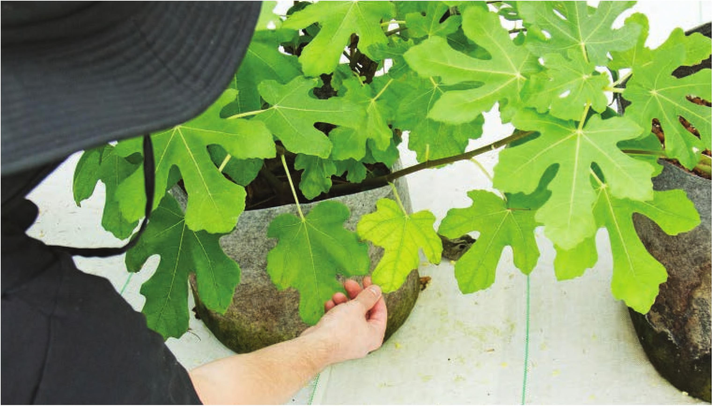

If the answer is yes to all these conditions, it is Likely the problem is nutrient related. Often, nutrient-related issues can be remedied by dumping out the nutrient solution and restarting the system. CHLOROSIS AND NECROSIS Chlorosis is the loss of the chlorophyll, the green pigment in plants. Chlorosis can be used to describe leaf yellowing from many causes, including nutrient deficiencies or pest damage. Necrosis is plant tissue death. Plant diseases or nutrient deficiencies often start with signs of chlorosis that lead to necrosis. Interveinal Chlorosis on New Growth Interveinal chlorosis on new growth often indicates an iron deficiency or another micronutrient deficiency. Most hydroponic fertilizers provide plenty of iron, so the problem is rarely the presence of iron. Iron deficiencies generally occur because the pH is too high. Some crops are “iron-inefficient” and struggle to uptake iron. Basil is one of the common examples for an iron-inefficient plant. If basil is grown in a nutrient solution with a high pH, sometimes just over 6, it can show interveinal chlorosis on new growth indicative of an iron deficiency. The leaves showing this type of interveinal chlorosis will not recover but future growth can return to normal if the pH is adjusted and/or iron is supplemented to the nutrient solution. Chlorosis on Older Leaves Chlorosis on older leaves can be the result of a few different scenarios: Nitrogen deficiency Nitrogen is a major component of chlorophyll, the green pigment in leaves. Plants are able to take the nitrogen from chlorophyll and move it throughout the plant as needed. When the plant detects a nitrogen Healthy, chlorotic, and necrotic sage leaves Chlorotic fig leaf with necrotic leaf edges Interveinal chlorosis on new growth Chlorosis on lower older leaves can indicate a nutrient deficiency, or it can be the natural senescence of older leaves. 164 DIY HYDROPONIC GARDENS
